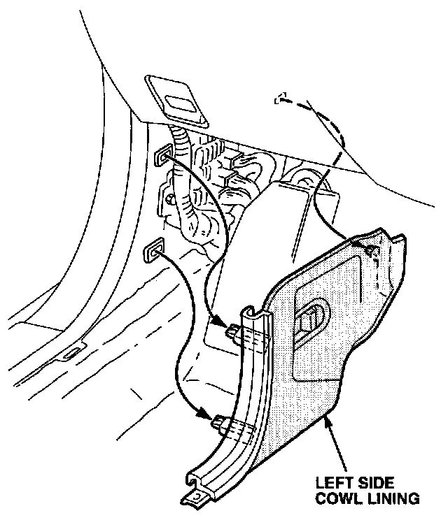
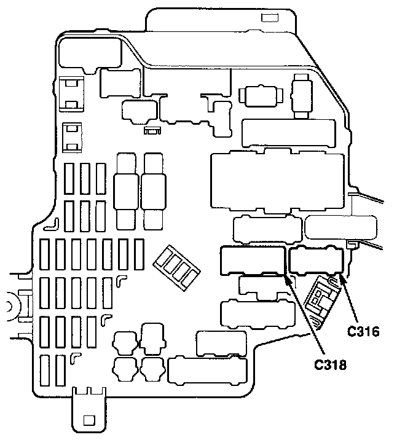
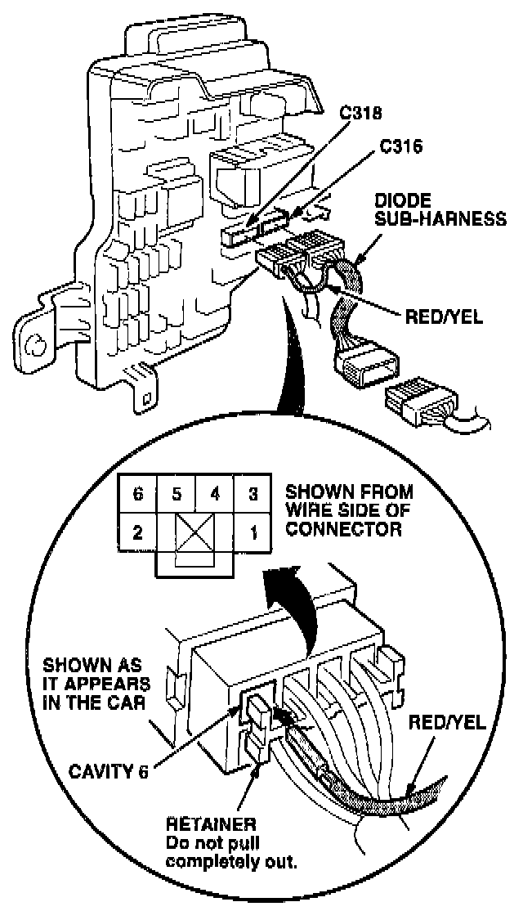
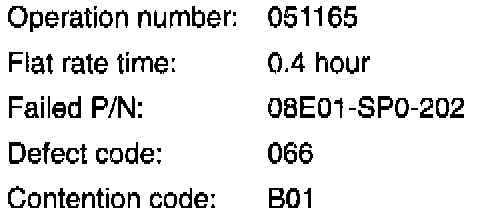

Cellular Phone - Intermittently Fails To Power Up
September 28, 1993BULLETIN NO.
93-023
YEAR
1991-93
MODEL
LEGEND
VIN APPLICATION
ALL with optional cellular telephone
Intermittent Power on Cellular Phone
SYMPTOM
The Acura cellular telephone intermittently fails to power up after starting the engine or fails to maintain operation during starter motor engagement.
PROBABLE CAUSE
Voltage to the cellular telephone transceiver is interrupted when the starter motor is engaged.
CORRECTIVE ACTION
Install the sub-diode harness (see PARTS INFORMATION) to maintain voltage to the transceiver during starter operation.

1. Remove the left side cowl lining.

2. Disconnect the 12-P C316 connector in the interior fuse box.
3. Insert the 12-P male connector of the diode sub-harness into the C316 cavity.
4. Insert the C316 male connector, just disconnected from the fuse box, into the 12-P female connector of the diode sub-harness.
5. Disconnect the C318 connector from the interior fuse box.
6. Loosen the terminal retainer on the C318 male connector just enough to insert the loose pin of the diode sub-harness into cavity # 6.
NOTE:
Be careful not to pull the retainer all the way out, or you will have to re-thread the connector wires.
7. Push the terminal retainer back in, locking the diode sub-harness pin in place.

8. Reconnect the C318 connector into the fuse box.
9. Verify operation of the cellular phone during starter operation.
10. Reinstall the left side cowl lining.
PARTS INFORMATION
Diode sub-harness: P/N 08E01-SP0-2M0F3

WARRANTY CLAIM INFORMATION
In warranty:
The normal warranty applies.
Out of warranty:
Any repair performed after warranty expiration may be eligible for goodwill consideration by the District Service Manager or your Zone Office. You must request consideration, and get a decision, before starting work.

Disclaimer